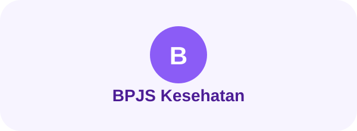

Networking
MikroTik · TCP/IP · VLAN · NAT · DHCP · Firewall · Subnetting
Hello, I'm
Mahasiswi S1 Manajemen dengan latar belakang Teknik Komputer dan Jaringan. Menggabungkan kemampuan teknis, administrasi, pengelolaan data, dan problem solving untuk menciptakan solusi yang terstruktur dan efektif.

01 — ABOUT ME

Saya memiliki latar belakang Teknik Komputer dan Jaringan (TKJ) yang membentuk cara saya berpikir secara logis, teliti, dan sistematis.
Selama sekolah, saya terbiasa mengerjakan konfigurasi jaringan, server Linux, virtualisasi, administrasi data, serta troubleshooting. Saya juga mendapatkan pengalaman PKL di BPJS Kesehatan Cabang Subang yang memperkuat kemampuan administrasi, pelayanan, dan pengelolaan data.
Saat ini saya melanjutkan studi di bidang Manajemen karena ingin mengembangkan kemampuan yang lebih luas—bukan hanya memahami bagaimana sebuah teknologi bekerja, tetapi juga bagaimana proses, data, manusia, dan strategi dapat dikelola secara efektif.
02 — SKILLS
Keahlian yang saya kembangkan dari pendidikan, project, organisasi, pengalaman PKL, dan pembelajaran mandiri.
Fondasi teknologi yang saya gunakan untuk memahami infrastructure, systems, dan troubleshooting.
MikroTik · TCP/IP · VLAN · NAT · DHCP · Firewall · Subnetting
Debian · Ubuntu CLI · Nginx · Apache2 · Bind9 · IIS · SSL
Proxmox · Docker · WireGuard · Tailscale · Reverse Proxy
Microsoft Excel · Google Sheets · Data Entry · Documentation · Service
03 — EDUCATION

Program studi yang saya pilih untuk memperluas perspektif di bidang bisnis, organisasi, dan pengelolaan sumber daya.
Currently studying
Teknik Komputer dan Jaringan (TKJ), dengan fokus pada networking, Linux server, infrastructure, dan troubleshooting.
Lulusan Terbaik TKJ · 2025/202604 — EXPERIENCE

Mendukung aktivitas administrasi dan pelayanan peserta, termasuk pengelolaan data serta pendampingan layanan Mobile JKN.
Administrasi dan pengelolaan data menggunakan Excel dan Google Sheets.
Mendampingi pelayanan peserta dan membantu proses penggunaan Mobile JKN.
Terbiasa bekerja dengan ketelitian, komunikasi, dokumentasi, dan prosedur kerja.
05 — PROJECTS
Project digunakan sebagai ruang untuk menguji konsep networking, server, virtualization, dan web development.
Virtualization environment dengan remote access menggunakan Tailscale.
Eksplorasi Debian, Nginx, Apache2, SSL, DNS, dan reverse proxy.
Project perangkat otomatis dengan fokus pada sensor, logic, dan implementasi.
06 — ACHIEVEMENTS

Penghargaan atas pencapaian akademik terbaik pada kompetensi keahlian Teknik Komputer dan Jaringan.

Medali emas Bahasa Indonesia serta pengalaman mengikuti kompetisi akademik lainnya.
Pengalaman kompetisi Matematika tingkat kabupaten serta perolehan medali pada bidang Informatika dan Biologi.
07 — CERTIFICATES
Klik certificate untuk melihat gambar dalam ukuran penuh.